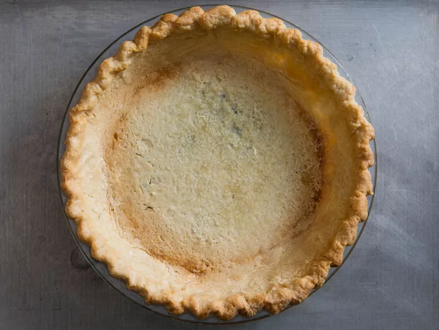

Pie Crust

Description
This pie crust recipe yield two crusts and is the perfect addition
to your favorite pie recipe.
Ditch those pre-made crusts and delve into this recipe for the most
delicious, delicate pie crust you'll ever taste. You won't ever look
back!
This dough takes some focus and a delicate touch, but it's worth it.
It requires a few steps in order to make those flaky layers!
The key is making sure your butter is super cold, and refrigerating
the dough between steps if necessary. Cold butter is key to the flaky
texture of this crust. If the butter is allowed to melt, the layers
will simply turn into a uniform mush and you'll end up with a dense,
boring crust.
Ingredients
- 1 2/3 cups all purpose flour (plus more for dusting)
- 1 tablespoon sugar
- 1 teaspoon kosher salt (or 1/2 teaspoon table salt)
- 2 sticks (or 8oz) unsalted butter, straight from the fridge
- 1/2 cup cold water
- Nine-inch pie dish
Steps
- Whisk flour, sugar, and salt together in a medium bowl.
- Cut butter into cubes no larger than 1/2 inch, then toss
with flour mixture to break up the pieces. With your fingertips,
smash each cube flat - that's it! No cutting or rubbing.
- Stir in water, then knead dough against sides of bowl until
it forms a shaggy ball. Dough should be between 65-70 degrees F.
If not, refrigerate before proceeding.
- On a generously floured work surface, roll dough into a roughly
10x15 inch rectangle. Fold the 10 inch sides to the center, then
close the newly formed packet like a book. Fold in half once more,
bringing the short sides together to form a thick block. Divide in
half with a sharp knife. Dough should still be between 65-70
degrees F. If not, refrigerate before proceeding.
- Using as much flour as necessary, roll one piece into a
14 inch circle.
- Transfer carefully to 9-inch pie dish.
- Use as directed in your favorite recipe
(I like to use this for
pumpkin pie.)